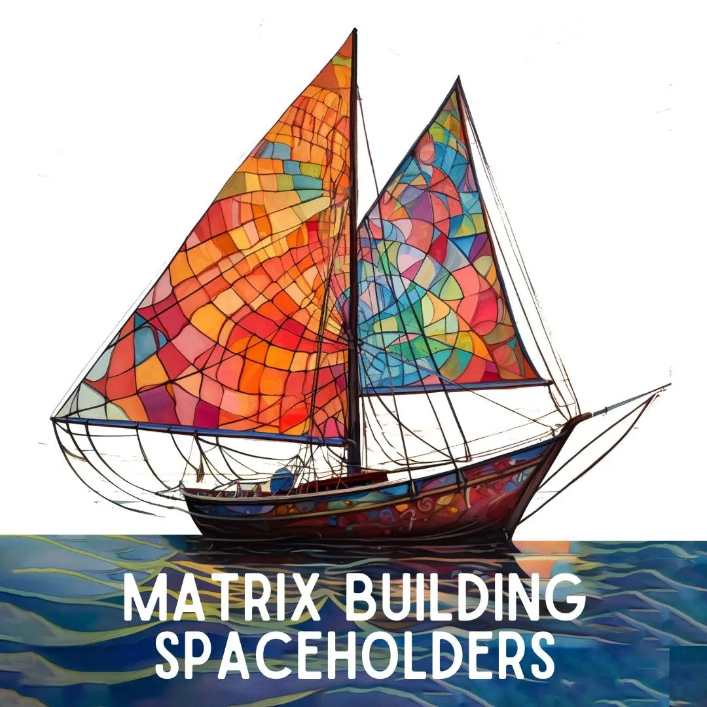

Matrix Building
Spaceholders
- …
Matrix Building
Spaceholders
- …
- Matrix Building Spaceholders - MBSH- ### Who are we? How does this work? What is this team for?- This weekly - Trainingis about building a solid ground (Matrix) for becoming and being a true- Spaceholder (archived — not captured). The "Matrix Building Spaceholders" Team invites people who are doing their (first) steps in the- Possibility Management- Context- Holding Space.- The group is to bridge the gap between an individual start in Spaceholding and for joining one of the - Possibilitator Trainings- .- We are all already - Spaceholders (archived — not captured). The question is for what? And to which extent?- This group focuses on - Ciclebuilding and growing a soild and- centeredground for the own speciality to thrive.- In this group you take a stand to hold space for- a regional or online Possibility Team- a Study Group or- a SPARKs Team.- TIME TO JOIN - You are welcomed when you … - #### … his- Team is for all who arecommitted to develop Spaceholder skills by building the necessary internal Matrix to hold space for something bigger .- #### The work here focuses on creating a solid foundation to become an authentic Spaceholder, contributing your non-material value to Teams, Circles and your Village.- This space is for all who are turned on by being in an Evolutionary team and co-creating next culture- Archiarchy. - REQUIREMENTS- #### • Completed at least two Lab- #### • Completed Gremlin Transformation Zero in the last year or committed to starting it within the next three months- #### • Completed Rage Club and Fear Club- #### • Already held space before for Rage Clubs, Possibility Teams- #### or other radical responsible spaces or holding space now for those team- #### You are willing to change into the identity of a neutral researcher: This means, that you conduct experiments, document and share their results with the Team on a regular basis.- TIME TO LEAVE- You leave the space when you … - … are sustainable holding space for a Possibility Team, Study Group, or SPARK Team and it is time for you to do the next step. - … have grown your own circle to a degree that you are able to deliver your offers. - … have joined one of the Possibilitator Trainings. - Context- The desire to develop skills is not enough. The desire to experiment doesn't create reality. The questions are: Are you developing your skills? Are you conducting your experiments on a regular basis? - The Context for - developing your Skills is https://experientialreality.mystrikingly.com/ - becoming a neutral Experimenter is https://becomeanexperimenter.mystrikingly.com/ - building Matrix is https://buildmatrix.mystrikingly.com/ - building your Circle is https://yourcircle.mystrikingly.com/ - As part of this team, you - Exit verbal reality and enter experiential reality. - Therefore, become an Experimenter. - Therefore, pay attention to what you use your Attention for. - Therefore, become someone who does self-observation. - Therefore, become a documenter. - ##### This- Team is for all who arecommitted to develop Spaceholder skills by building the necessary internal Matrix to hold space for something bigger than the self.- ##### The work here focuses on creating a solid foundation to become an authentic Spaceholder, contributing your non-material value to Teams, Circles and your Village.- ##### This space is for all who are turned on by being in an Evolutionary team and co-creating next culture- Archiarchy.- ##### It is a radical responsible space, contexted in the Gameworld of Possibility Management and uses Torus Technology.- ##### This is space for discovering your unique path as a Spaceholder, moving beyond pressure, overwhelm and scarcity of money. It’s time of delivering your non-material value in the world and exit patriarchy! Delivering your non-material values means you start reguraly giving worktalks, writing articles and holding spaces. undefined- ##### The Matrix building spaceholders, is a preparation for the Possibilitator Training. The Matrix Building Spaceholders is a place for Possibility Managers to go through all the EHPs, and go through practices, and experiments so they would mainly start holding spaces regularly, and grow their circle, OUTSIDE PM.- ##### The focus here is:- ##### • Circle building and collaboration, being visible, empowering to be what each of us cares about.undefined- ##### • Navigating with the 4 feelings from the small now, experimenting, inventing, hitting bottom- ##### • Become unhookable- ##### • Being clear about your actual Research is and getting what the Research of the other Matrix Building Spaceholders is about- ##### • Building the capacity to live from your purpose rather than survival mode.- ##### • What is your spaceholding flavor?- ##### • Researching about Circle Alchemy and Winning Happening - Spaceholding is not fair.- As a conscious Spaceholder, you will find that people have not yet built the matrix and skills to lead in adult collaboration.- Conscious space holding gets you to the point where you question boundaries, check your assumptions, take back your expectations, throw out your plan so you can be vulnerable in the moment and open the door for- new possibilities- . - What Is Matrix?- ### Discover more about Spaceholding and Circle Building... - Current Team- Kathrin Jehle- Holding Space for the Matrix Building Spaceholders brings me lot of joy and curiosity. I'm eager to explore more about spaceholding that is immersed with transformation, empowerment and joy as well as circle building beyond following my box preferences. I started my PM journey in autumn 2021, attending a PM team at - Schloss Glarisegg, the intentional community I live in. Meanwhile I quitted my normal life and build up my circles around Rage Club, Emotional competence,- Possibility Coachingand my Heartproject- Healing Void (archived — not captured)- a space for women (and men) with the experience of an induced abortion. I consider myself as a woman of earth in the way that I sense the urge of connecting with Gaia as a whole: immersing myself into the grid of energy that connects all of us, sending out vibes of love and compassion, listening to the calls which are silently landing in my being, giving me hints about next steps of evolution.- My Gremlins Name is Tomsu: He likes most beating myself up and judging other people. - Find out more about my interests and offers on my website: - www.kathrinjehle.ch- Kristoffer Trautmann- Being part of the Matrix Building Spaceholder Team has brought me more into reality. It helped me step out of a transformational healing marathon that, in truth, had become a numbing and distracting strategy—disguised as transformation—to avoid feeling the pain of the life I had created. - I enjoy the love and clarity in the space and within the team. I also love knowing that I am surrounded by beings who are ready to chop my head off if needed—while keeping their hearts open. - The transformational spaces I currently focus on are: - – the Matrix Building Spaceholder Team - – the Good Boy Buster Dojo - – Treehouse, where men practice “Let your little boy speak” - – and a Grow-ness Circle I initiated outside the Possibility Management Gameworld. - I enjoy these spaces alongside all the transformation unfolding in the middle world of my life — as a father, as a being, and as a man undergoing deeper change. Life aligns me more and more with the forces that want to bring something meaningful into the world — and to make it happen. On that path, I break again and again. - Benno End- ... - Legends- Sareeta Pattni - The Matrix Building Spaceholder team has given me a place to observe and practice PM skills in real time, it is a scary space be more visible and show up as Me. I have been exploring what it means to be part of a team and so far it has been a painful process; I notice how often I hold myself back and this is a disservice to the people I am with because I am consuming the space rather than creating value. Deep rooted stories get in the way, allowing my Gremlin to take over and make me blank. When I let this happen, I cannot find a way into conversation or space, it is like I am caught in a landslide and I am being swept along with it. It is difficult for me to find my way back in. Knowing this has given me the choice to do something about it because I want to create more conscious, responsible spaces and so I have my next step of doing deeper Gremlin work. - Lisa Ommert - As the main spaceholder of the MBSH I am in amazement about the commitment which is so visible in the Team. I am commited to go with the Team through a grinder of ongoingly Experiments, inventing Practices for each other, rotating Spaceholders, never holding back any Feedback and Proposals. We are also holding space for each other to go through Emotional Healing Processes - to get out of our own way. This Team is to grow Matrix in any fascet of Spaceholding and Circle Building and it is a doorway into the Possibilitator Training. I feel glad about everyone, who is not only joining that Team, but also leaving the team to move on to join the Possibilitator Training. Matrix Building works! - Gabriel Lechemin - After our meeting in the Matrix Building Spaceholder team, I made an agreement to look bad and my MBSH team mate Mariola helped me to look bad in public. We both took big pieces of cakes that we started to eat really with gluttony and awkwardness, putting big pieces of cake in my face, playing with coffee on the table like kids. In this wierd and uncontrolled environment, my coach Mariola helped me to distill the shadow principle of my Gremlin to be that 'perfect' and why I should look so 'nice' all the time. - I discovered that I 'being perfect' have two sides: staying in a fantazy world of being a Guru, a leader that manipulate and get what he want silently, and on the other side refusing myself to be this archetypal crazy artist that I naturally, spontaneously am. - This is one of the major discoveries of my life and I'm glad about the distinction 'Gremlin' and 'Shadow purpose'. - Isabel Amarilis Esterl - First when I entered the Matrix Building Spaceholder space I was not participating as a Spaceholder. As I was not creating the space I missed High Level Fun. In this moment, I could see that I saw my need and was unable to change something. I remember when the whole group was empowering me to make my first proposal. My box was in adventure mode. I sensed that my usual strategy was to leave the space without asking for what matters to me. - After an ETB and a Lab in Brazil where I kept discovering how to co-create the space, say what I need and make proposals, I had the courage to speak up. This team was and is the net for me to try something new and take a risk. The whole group shifted into an evolutionary team after moments of fears a lot of fears and resistances. This is the most adventures group for me because I sense being in a circle and in team. - Do you want to join the team?- Contact Spaceholder Kathrin Jehle - NOTE:This website is a- Bubble in the Bubble Map- StartOver.xyz- doorway- experiments- upgrade your thoughtware- point of origin- create- possibility- knowledge- about. Your- thoughtware- with. When you- change your thoughtware- liquid state- reorganizes- feelings- emotions- upgrading your thoughtware- build matrix- consciousness- low drama- reactivity- collectively build- responsibly- MATRIXBS.00to log your Matrix Point for reading this website on- StartOver.xyz